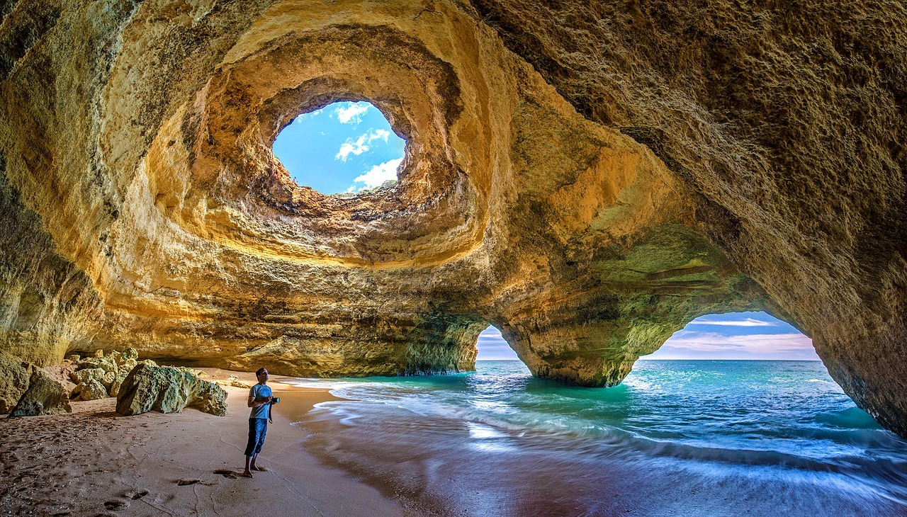
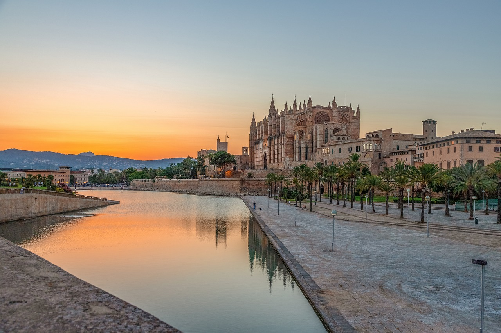

Tennerife
Tenerife is the perfect holiday spot for sun-seekers and nature lovers alike. The beaches are stunning, the weather is always warm, and there's so much to explore. From volcanic landscapes to charming villages, there's never a dull moment. Plus, the local food is delicious! My top travel tip: don't miss out on visiting Teide National Park to see Mount Teide. It's a breathtaking experience you won't forget.
Mallorca
Palma de Mallorca is an awesome holiday destination, especially for young people looking for fun. The beaches are amazing, with clear blue water and soft sand perfect for chilling and swimming. But beyond the beaches and parties in places like Magaluf and Santa Ponsa, there's so much more to see. Explore Palma's old town with its cool buildings, or head to the stunning Serra de Tramuntana mountain range for hiking and scenic drives. Don't miss out on charming villages like Valldemossa and Deià, or the ancient ruins of Pollentia and the impressive Bellver Castle.
Minsk
Minsk is a cool place for a holiday with lots to see and do. You can check out Independence Square and Trinity Suburb for history and charm. There's also the Svislach River for a nice walk and plenty of museums to visit. At night, the city comes alive with bars and clubs to enjoy. Don't forget to try some tasty Belarusian food too! And for a unique experience, consider visiting the National Library of Belarus, known for its futuristic design and panoramic views of the city.
New York
New York City is an incredible holiday destination with so much to offer. From iconic landmarks like Times Square and the Statue of Liberty to world-class museums like the Metropolitan Museum of Art, there's something for everyone to enjoy. Explore the diverse neighborhoods, from the bustling streets of Manhattan to the trendy vibes of Brooklyn. Indulge in delicious food from around the world, from pizza slices to gourmet cuisine.